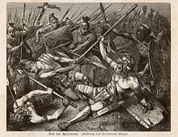

Spartacus
Spartacus (Greek: Σπάρτακος Spártakos; Latin: Spartacus;[1] c. 111–71 BC) was a Thracian gladiator who, along with the Gauls Crixus, Gannicus, Castus, and Oenomaus, was one of the escaped slave leaders in the Third Servile War, a major slave uprising against the Roman Republic. Little is known about Spartacus beyond the events of the war, and surviving historical accounts are sometimes contradictory and may not always be reliable. However, all sources agree that he was a former gladiator and an accomplished military leader.
This rebellion, interpreted by some as an example of oppressed people fighting for their freedom against a slave-owning oligarchy, has provided inspiration for many political thinkers, and has been featured in literature, television, and film. Although this interpretation is not specifically contradicted by classical historians, no historical account mentions that the goal was to end slavery in the Republic.
Early life
| Spartacus | |
|---|---|
|  | |
| Personal Information | |
| Born | c. 111 BC The area around the middle course of the Strymon the modern-day Struma river, Bulgaria) |
| Died | 71 BC (aged 39–40)Battlefield near Petelia (modern-day Strongoli, Calabria, Italy) |
The Greek essayist Plutarch describes Spartacus as "a Thracian of Nomadic stock", in a possible reference to the Maedi tribe.[4] Appian says he was "a Thracian by birth, who had once served as a soldier with the Romans, but had since been a prisoner and sold for a gladiator".
Florus described him as one "who, from a Thracian mercenary, had become a Roman soldier, that had deserted and became enslaved, and afterward, from consideration of his strength, a gladiator".[6] The authors refer to the Thracian tribe of the Maedi, which occupied the area on the southwestern fringes of Thrace, along its border with the Roman province of Macedonia - present day south-western Bulgaria.[10] Plutarch also writes that Spartacus' wife, a prophetess of the Maedi tribe, was enslaved with him.
The name Spartacus is otherwise manifested in the Black Sea region. Kings of the Thracian dynasty of the Cimmerian Bosporus and Pontus are known to have borne it, and a Thracian "Sparta" "Spardacus" or "Sparadokos", father of Seuthes I of the Odrysae, is also known.
Enslavement and escape
According to the differing sources and their interpretation, Spartacus was a captive taken by the legions. Spartacus was trained at the gladiatorial school (ludus) near Capua belonging to Lentulus Batiatus. He was a heavyweight gladiator called a murmillo. These fighters carried a large oblong shield (scutum), and used a sword with a broad, straight blade (gladius), about 18 inches long. In 73 BC, Spartacus was among a group of gladiators plotting an escape.
About 70 slaves were part of the plot. Though few in number, they seized kitchen utensils, fought their way free from the school, and seized several wagons of gladiatorial weapons and armor. The escaped slaves defeated legions sent after them, plundered the region surrounding Capua, recruited many other slaves into their ranks, and eventually retired to a more defensible position on Mount Vesuvius.
Once free, the escaped gladiators chose Spartacus and two Gallic slaves—Crixus and Oenomaus—as their leaders. Although Roman authors assumed that the escaped slaves were a homogeneous group with Spartacus as their leader, they may have projected their own hierarchical view of military leadership onto the spontaneous organization, reducing other slave leaders to subordinate positions in their accounts.